Al llegar al lugar, te recibe un espacio limpio y acogedor, todo perfectamente organizado y acomodado. Las luces cálidas de subida en las escaleras y la vegetación del lugar crean una atmósfera hogareña que te hace sentir bienvenido. Un empleado del lugar te da la bienvenida con una sonrisa y te acompaña a tu mesa, o puedes elegir sentarte donde prefieras si hay mesas disponibles. Te traen la carta con una gran variedad de chilaquiles, bebidas y postres, lo que hace difícil elegir solo uno. En mi experiencia, opté por una bebida embotellada de frutos rojos y unos chilaquiles "especiales de la casa", que consisten en tortillas doradas bañadas en salsa roja o verde, con crema, queso fresco y cebolla. Los sabores son exquisitos y te dejan un buen sabor de boca aun que preferiria que estuvieran mas condimentados, complementando la atención amable y atenta que recibes en todo momento. El ambiente del lugar es relajado y es perfecto para disfrutar de una comida con amigos o familiares. A pesar de estar ubicado en el centro de Oaxaca, los precios son accesibles, lo que lo convierte en un destino muy recomendable para disfrutar de chilaquiles y sentirte como en casa.
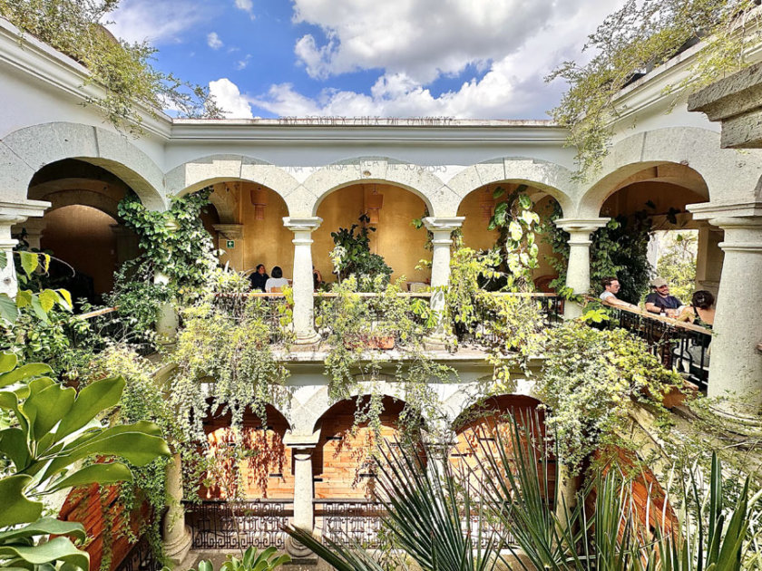 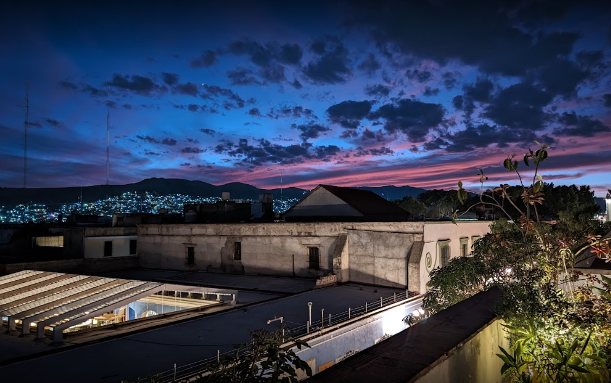 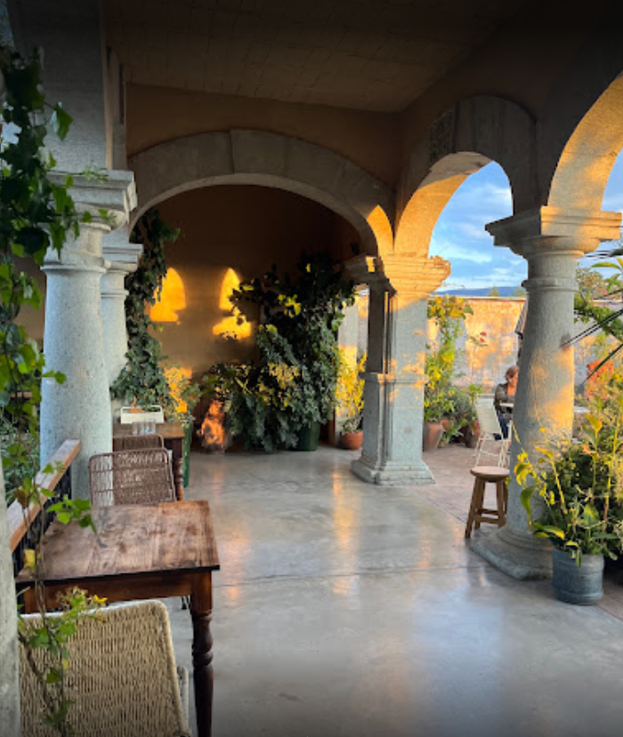es un lugar verdaderamente especial que ofrece una escapada tranquila en medio del bullicio de la ciudad. Situada en lo alto de un hotel, esta terraza ofrece vistas panorámicas espectaculares que abarcan toda la ciudad y más allá. El ambiente es relajado y sofisticado, con cómodos asientos al aire libre y una decoración elegante que invita a relajarse y disfrutar del entorno. Ya sea de día o de noche, las vistas desde la terraza son impresionantes, lo que la convierte en un destino popular tanto para reuniones sociales como para momentos de tranquilidad. La oferta gastronómica es variada y deliciosa, con una selección de platos y bebidas que van desde cócteles artesanales hasta aperitivos gourmet. La atención al detalle en la presentación de los platos y la calidad de los ingredientes son evidentes en cada bocado. El servicio es atento y profesional, con el personal siempre disponible para atender las necesidades de los clientes y garantizar una experiencia agradable para todos. Además, la música de fondo crea el ambiente perfecto sin ser demasiado abrumadora. Sin embargo, sería útil mejorar la disponibilidad de sombrillas o toldos en los días soleados, ya que la exposición directa al sol puede resultar incómoda para algunos clientes. Además, los precios pueden ser un poco elevados, pero la calidad de la experiencia justifica el costo.
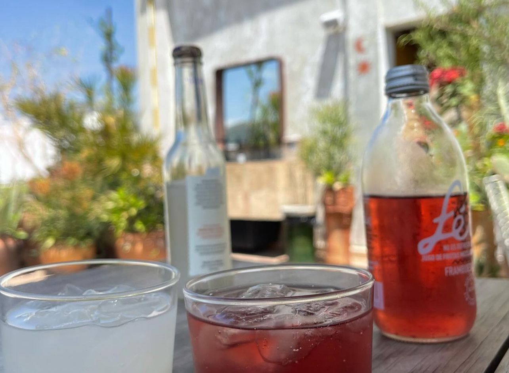 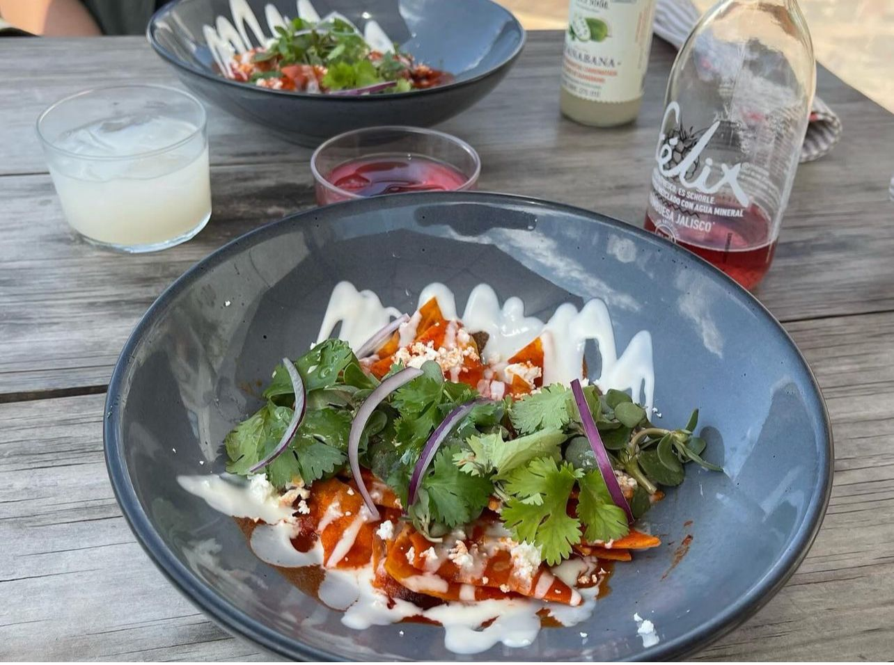 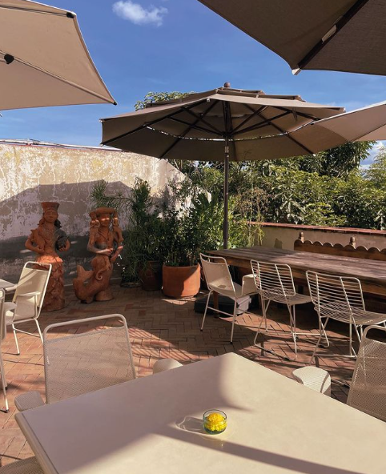Estas reseñas estaras mezclas de todo un poo, tanto en que deben mejorar, tanto puntos positivos de los diferentes puntos de vista de los comensales (información recaudada de Google maps).
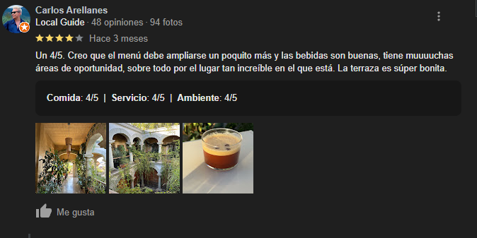 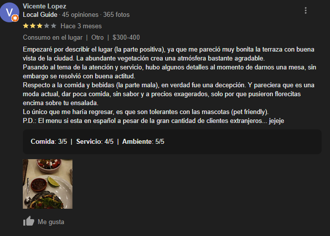 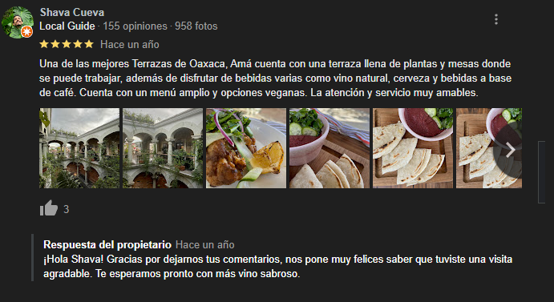 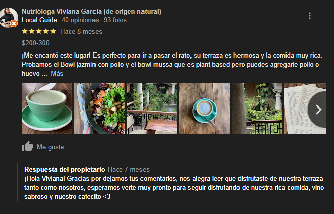 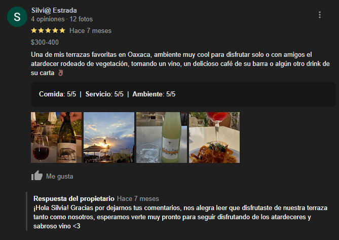 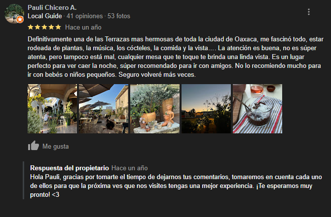 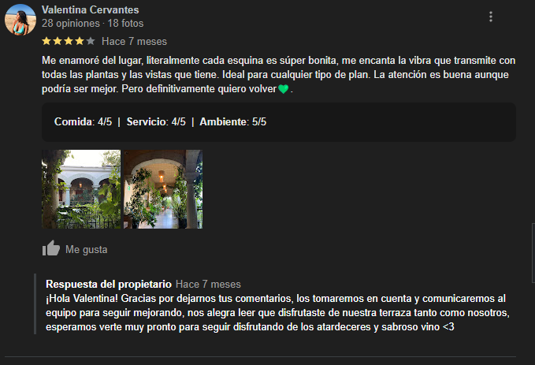 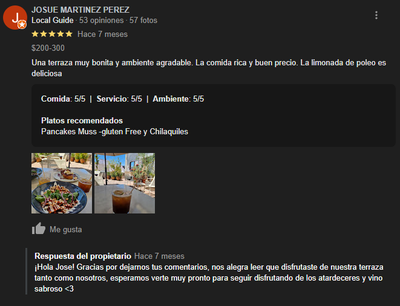 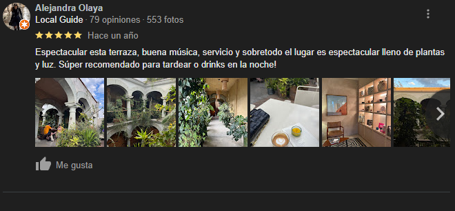| Elemento | Descripción |
|---|---|
| bebidas | Las bebidas son bastante frescas y ricas, y las bebidas embotelladas son de sabores exoiticos igual bastantes ricos sus precios son relativamente accesibles (Recomendado). |
| Chilaquiles | Los chilaquites vienen en una presentacion bastante linda, contiene todo lo que un chilaquil deberia contener, pero su sabor deja mucho que desear, quisiera que supiera mas, la verdad incluso creo que le faltaba sal y no solo para mi, si no que igual para mi acompañante, pero las porciones son aceptables y con un precio igual relativamente accesible (Recomendado un 50%). |
| Lugar | Ambiente agradable, musica suave, atención 8/10 (Recomendado). |
| Precios | Los precios son bastantes accesibles independientemente de la zona en la que se encuentra el lugar, todo su consumo en el lugar es aceptable, pagas por la atención brindada y la comida, desde mi punto de vista lo recomiendo mucho para disfrutar de las vistas que te ofrece y conversar y convivir con otras personas. |
Regresar a la pagina principal
Siguiente reseña